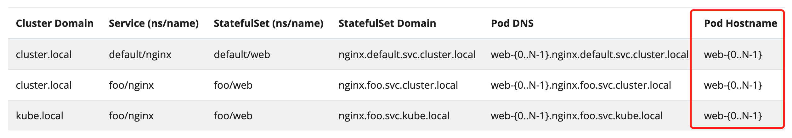

在实际业务开发中，有很多场景需要用到全局唯一 ID，如用户身份标识、订单号交易号、消息事件标识等， 对于复杂的大流量分布式场景，唯一 ID 的生成尤为重要，业界也有不少解决方案，但每一种方案都有其优缺点， 需要结合具体业务 trade-off 来做出最佳的选择。
1. 需要考虑什么因素
1）对于一个唯一 ID，最基本的要求是唯一性。
真的需要保证全局唯一吗？这当然是由具体业务决定。如果不同的业务对生成 ID 有不同的诉求， 完全可以以业务的维度进行隔离，只要保证 ID 在每一个具体业务下是唯一的即可。而且，对于消息标识来说，其实不需要保证 消息 ID 是全局唯一的，可以以用户的维度进行隔离，每条消息在特定的用户下是唯一的，这可以减轻 ID 生成的负担。 或者允许 ID 生成算法产生重复的 ID，但这种情况出现的概率低于某个可接受的阈值，那也是可以的。
2）对于大流量的业务，需要保证唯一 ID 生成服务的可用性。
因为有大量的服务都依赖了 ID 生成服务，如果 ID 生成服务不可用， 就会对系统产生严重的影响，比如用户下不了单，消息发不出去，用户没法退款等等。所以一旦决定使用唯一 ID，就得保证 ID 生成服务的可用性，确保部署了足够的节点，并且在流量抖动时能快速扩缩容。
3）在保证 ID 的唯一性、可用性之后，考虑生成 ID 的算法性能。
算法要尽可能快，这样请求才会有更低的延迟；算法不能太复杂， 不能依赖太多外部组件，因为每多依赖一个组件，系统的复杂性就会陡增，同时可靠性会大大降低。
时间是肯定唯一的，两个事件发生的时间必然是 相互区别的，只是可能由于观察者的原因，不能区别极细粒度（如毫秒、纳秒级别）时间顺序。所以，使用时间戳是一个比较自然的想法。 举个例子，如果某业务每天订单量只有十几单到几十单，使用秒级时间戳可以吗？假设该业务每天平均产生 50 个订单，下单时间等概率分布在各个时间点， 由于一天有 $24*60*60 = 86400$s，所以理论上订单号冲突的概率为 $50/86400=0.058\%$，已经比较小了，是可接受的范围吗？ 后面订单量大幅增加的时候，算法还适用吗？这都是需要考虑的问题。
最好保证生成的 ID 是有序的，许多 ID 号都会存储到数据库中，并且很有可能作为唯一键或者索引，有序的 ID 可以提高插入的效率。 需要保证“严格有序”，还是“趋势有序”？“严格有序”要求每一个新生成的 ID，都必须比前一个 ID 要大（只讨论递增的情况）； 而“趋势有序”则允许新的 ID 在一小段时间内，比旧的 ID 要小，但是随着时间的推移，ID 的值是呈上升趋势的。
2. 有哪些解决方案
有很多方法可以生成唯一的 ID，它们大致可以分为两类，一类是基于数据库的自增，一类是借助机器和时间的自增。
1）基于数据库的自增
由于数据库每一条记录都是相互区别的，适用记录的标识来作为唯一 ID 是一个自然的想法。 比如使用 MySQL 的 AUTO_INCREMENT，每次需要生成唯一 ID 的时候，都往 MySQL 里查一条记录，取回记录的自增 ID 就 可以了；比如 Redis 的 INCR 命令，可以对指定的 Key 进行自增操作，也能够生成唯一的 ID。
使用这类方法生成唯一的 ID，是有序递增的，这就对数据的存储、分页和排序提供了很好的帮助。但可能会遇到并发的瓶颈， 毕竟数据库的并发写入肯定是有一定的上限的。另外，由于系统引入了新的组件，复杂性会增加，可靠性也会降低，如果数据库 发生故障，可能对业务影响很大。
2）借助机器和时间
每台机器的 Mac 地址都是唯一的，足够精确的时间也是唯一的，如果两者结合，毫无疑问更是唯一的。 比如日志组件经常用到的 UUID，其核心思想就是用机器的网卡标识、本地时间和一个随机数来生成的。 MongoDB 的 ObjectId 、Twitter 的 Snowflake 算法的生成也是类似的思想。


这类方案都是在本地生成的，没有依赖第三方组件，从而大大提升了系统的可用性。 但也存在一些问题。在分布式环境下，要保证每台机器的标识是唯一的，如果像 UUID 和 ObjectId 那样直接使用 Mac 地址， 通过做一定的处理而得到的话，可能会有 Mac 地址泄漏的安全风险。当然也可以使用第三方组件，比如 etcd 或者 zookeeper 来保证唯一， 但这样又引入的第三方组件，增加了系统复杂性。另外一个问题，因为这些算法是强依赖于机器的时间的，但机器时间并不总是精确的， 特别是要精确到毫秒的情况下，可能会有始时钟回拨的问题，导致生成的 ID 有重复。对于这些问题，有没有与之对应的优化方案？
3. 如何做得最好
通常情况下，我们会考虑本地的生成方案，不再去依赖第三方组件。比如，现在考虑 Snowflake 算法，怎么优化上面提到的问题？
1）如何避免时钟回拨的影响
1）对于时钟回拨的问题，考虑到回拨的范围不会很大，通常都是毫秒级别的，因此，如果时间戳只精确到秒级，将会极大地降低回拨带来的影响。
2）可以牺牲 ID 生成的一点点效率，来保证 ID 的唯一性。即使存在秒级别的时钟回拨，那也有应对的措施。比如直接给业务抛异常，让业务去重试， 通常情况下，如果部署了多个节点，除非所有的节点都同时遇到了时钟回拨，不然重试的成功率也会很高；或者不直接给业务抛异常，而是等待一段 很短的时间，如果这段时间内，时钟回归正常，则给业务返回生成的 ID。
2）如何保证每个节点的机器 ID 是唯一的
当然前提是在不借助新的组件的情况下。考虑一下机器自身的特点，比如，所有的节点都部署在 k8s 管理的集群内， 并且节点是有状态的（比如StatefulSet）， 那么每个节点肯定是有相互区别的（当然是除了 Mac、IP 之外的区别），比如每个节点都有唯一的 Network ID，利用这个 ID 作为机器 ID 是可行的。

3）如何提高并发数
如果只考虑生成 64 位的唯一 ID，假设时间戳是秒级的，那么可变的只有后面的集群数、节点数和随机序列的长度。 秒级别的时间戳可以使用 31 个 bit 来表示，则剩下的一共 32 个 bit 分别表示集群、节点和随机序列。 可以根据实际的需要，去决定最多可能部署的集群和节点的数量。比如，某个业务只部署一个集群，该集群内最多部署 30 个节点， 那么就可以用 5 个 bit（$2^5=32>30$）来表示机器 ID（原始是使用 10 个 bit），使用这种方法，一个节点每秒钟理论上能 生成的唯一 ID（当然实际上也要考虑请求的处理效率），就从$2^{22}=4194304$（约 419 万）增加到$2^{27}=134217728$（约 1.34 亿），这几乎能满足绝大多数的业务了。
假设某个特别大型的应用，每秒钟需要产生的唯一 ID 超过 1.34 亿，也就是随机序列最后也用尽了，怎么办？等下一秒钟。
4）如何让生成的 ID 更有可读性
许多交易系统都有订单号，也是唯一 ID 的一种。如果订单号是一个 64bit 的数字，也不能得出一些有用的信息。 通常，我们可能会希望从订单号中比较轻松地知道，该订单是哪一天生成的，甚至哪个用户的。这样的要求是合理的， 因为对于运营来说，他们可能不会去查数据库，而是通过订单号得知一些有用的数据。
对于订单生成的时间，可以对唯一 ID 的时间戳转换一下，比如时间戳是 1610389708，对应的日期是 2021 年 1 月 11 日 6 点 28 分，那可以表示为 2101110628， 21 表示年的后两位，后面分别是月、日、时、分、秒，都用两位数来表示。因为时间戳和具体到秒的日期时一一对应的，所以 ID 的唯一性不会受到影响。